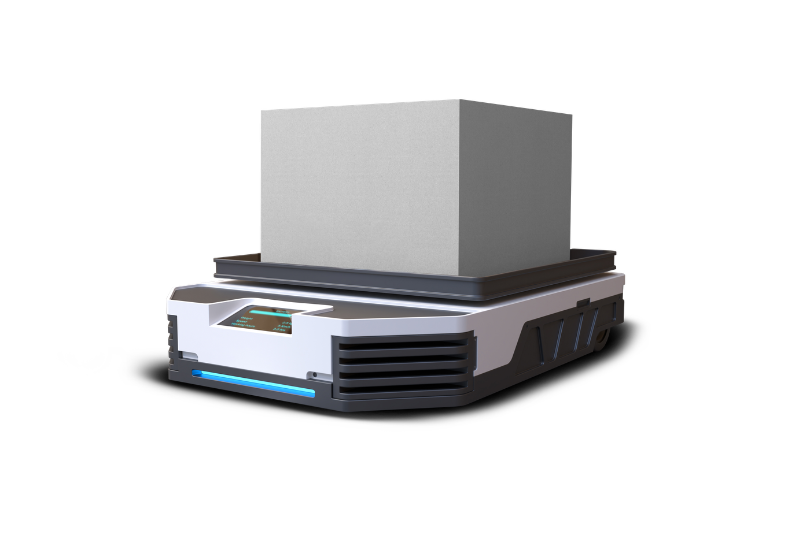
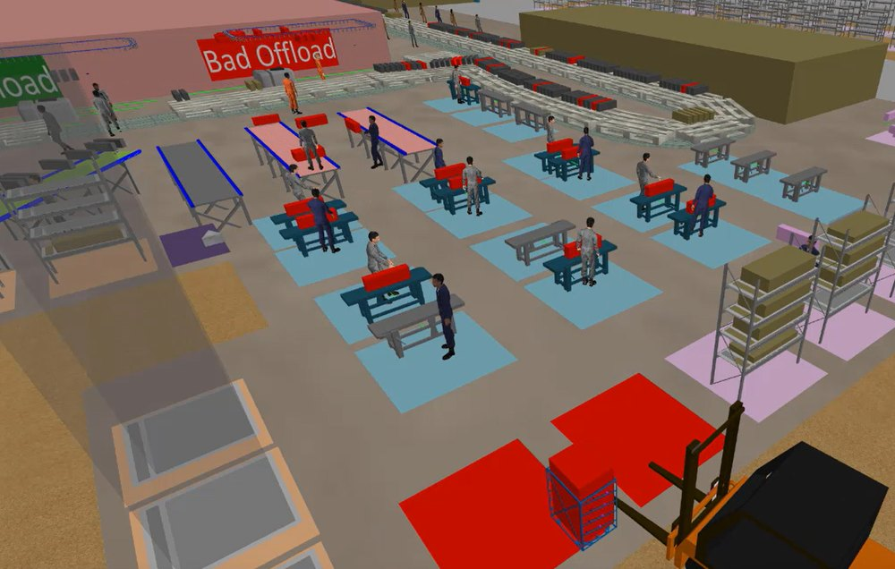
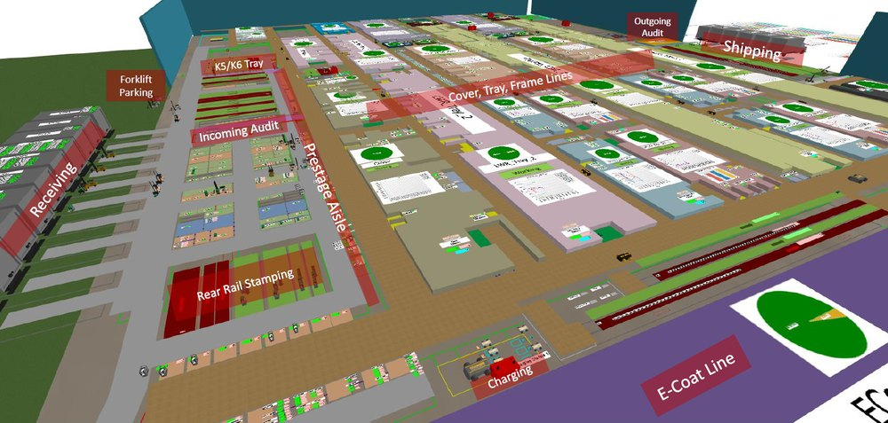
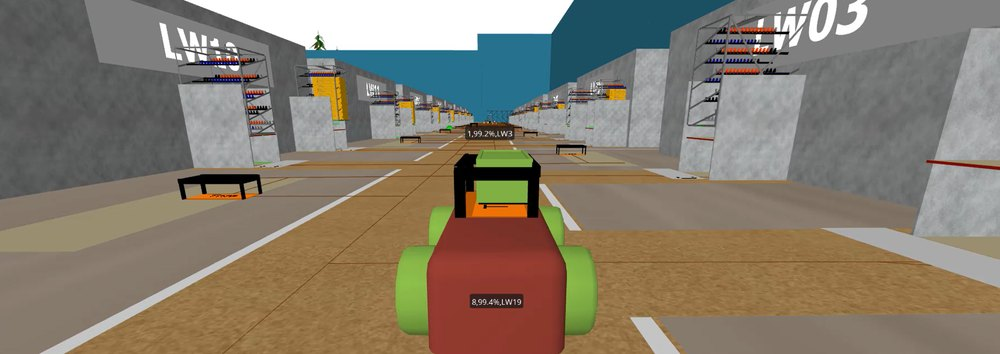
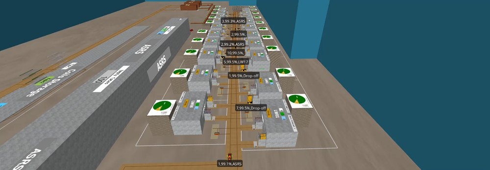

Logistics & Material Flow Optimization
Optimizing Routing, Fleet Performance, and Material Throughput

Are Your Logistics Strategies Causing Efficiency Losses?
The challenge
Typical issues we see
- Inefficient transport routes leading to increased costs and delays
- Underutilized fleet resulting in idle transporters and wasted resources
- Congestion & bottlenecks slowing down material movement and production
- Excessive WIP inventory consuming space and increasing operational costs
- Lack of proactive scenario planning causing unplanned disruptions
Key Inputs Required for Smart Simulation & Optimization
Factory Layout & PFEP
Defining storage, flow, and handling strategies
Production & Forecasts
Understanding volume fluctuations, scheduling Demand Forecasts
Transport & Resource Data
Evaluating fleet types, sizes, and utilization rates
Inventory Management
Assessing WIP, buffer stock, and replenishment schedules
Deliverables: Enhancing Logistics Performance Through Simulation & Analysis
3D Dynamic Simulation Model & Video Report
Real-time, interactive model visualizing inefficiencies and improvements pre implementation, enabling risk-free scenario testing.
Resource Allocation Plan
Efficient distribution of forklifts, tuggers, AGVs, bins, racks, and team members, maximizing output while maintaining cost-effectiveness.
Optimized Transport Route Plan
Structured routes that minimize travel time, enhance material delivery efficiency, and reduce material handling costs.
Charger Placement & Smart Charging Strategy
Optimized charging locations and energy-efficient practices that maximize transporter uptime and minimize operational downtime.
Fleet Utilization & Right-Sizing Analysis
Data-driven fleet recommendations that prevent underutilization, minimize unnecessary costs, and improve resource effectiveness.
Scenario-Based (What-if) Throughput Analysis
Performance evaluation under varying production conditions, enabling future-ready logistics strategies and scalability planning.
Bottleneck & Congestion Analysis
Identification and resolution of workflow restrictions to eliminate congestion and ensure uninterrupted material flow operations.
WIP & Inventory Buffer Strategy Report
Optimized stock levels and replenishment strategies that balance supply and demand and ensure material availability.
In practice
Simulation and analysis outputs




Cut material handling costs and eliminate bottlenecks with data-driven logistics and fleet optimization.
info@imsystems.com.sa